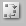
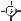

| |
|
SVG represents animation as elements interspersed through the main structure which represents the organization of the graphics. Animation elements appear as children of the graphics elements they animate. To allow focussing on animation, a timeline view shows all animation elements and groups them together according to the graphics elements they animate.
The timeline view displays animations associated with graphics objects. Each animated object of the document is represented there, with a graphical representation of its animation elements.
The following figure shows the three animated objects of a document. Each object is represented on the left side of the view by a label with a white background and a box next to its label. Clicking the label highlights the corresponding element in the formatted view, thus showing the context of that element. If the graphics element has a single animation element (like element Rectangle in the figure), this animation element is displayed as a colored bar. If there are several elements, a single gray bar represents the whole animation (Circle, at the bottom of the figure), and a '+' button in the label allows to view an expanded representation. Element MyText is an example of such an expanded representation where each animation element is represented by a colored bar. The button becomes a '-' that allows to go back to the condensed representation.
The position of an animation on the timeline depends on when it starts and stops acting, and the color of each bar reflects the type of animation:
animate,set,animateMotion,animateColor,animateTransform
The timeline view is useful to get a quick overview of the animation of
all graphics in a document, but it also allows to edit animations. Existing
elements can be modified. Most manipulations are done directly on the
timeline, such as moving a bar or changing its length. This is immediately
reflected in other views where the corresponding attributes of the animation
element are updated (attributes begin and dur in
that case).
A movement for an existing graphics element is created as follows:
Click Ctrl + Left mouse button on the red timeline slider and move it to the correct start position.
The element should have an ID. This ID will be displayed as the element label.
Click on the top left  button in the timeline view.
Click Ctrl + Left mouse button on the displayed  icon in the formatted view. This allows to control the key positions of the animated element in the context of the other graphics elements. Simply draw the motion path of the element.
Manipulating timing in the timeline view is more comfortable, as the synchronization of a particular element with the other animated elements is more clearly visible in this view. But the other views are still there, and some parameters may be adjusted in the structure view by editing attributes, as well as in the source code if necessary.
A color change for an existing graphics element is created as follows:
A bar representing an animation can be manipulated exactly like a rectangle in the document. Obviously some constraints are put in the timeline view. For instance, colored bars can move only horizontally along the time axis and their height cannot be changed individually. These constraints follow from the semantics of the timeline graphic language.